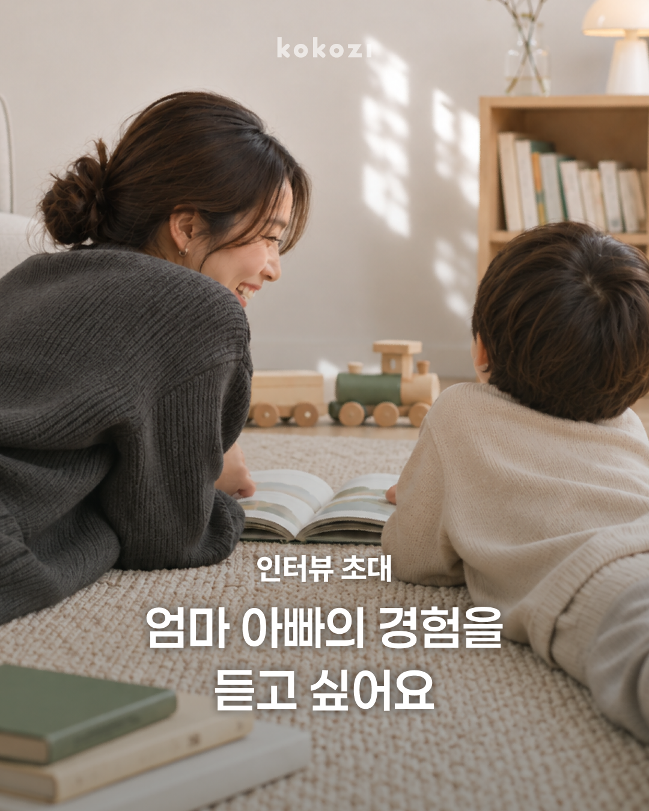
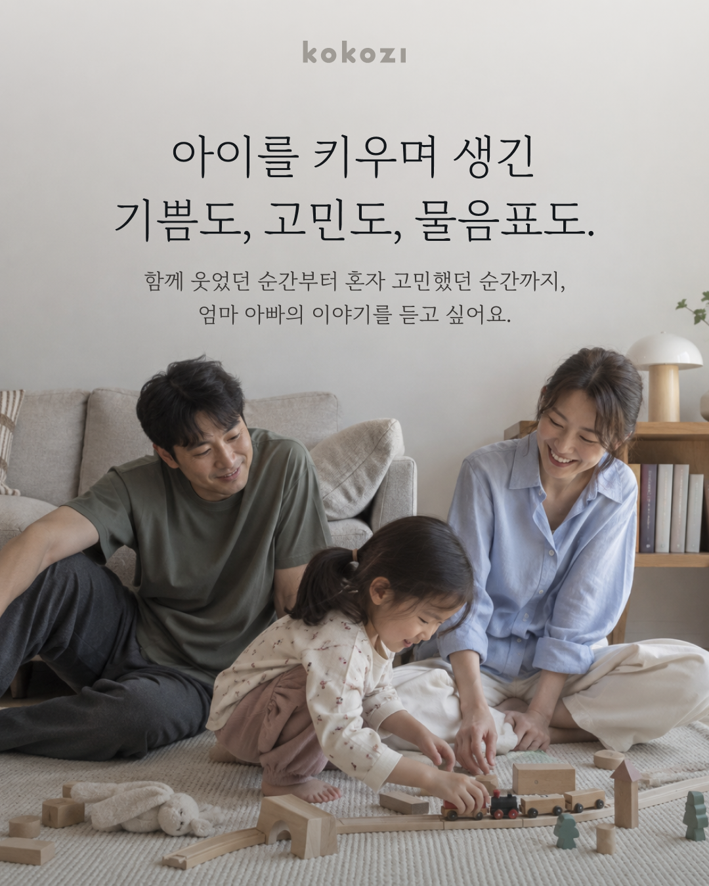
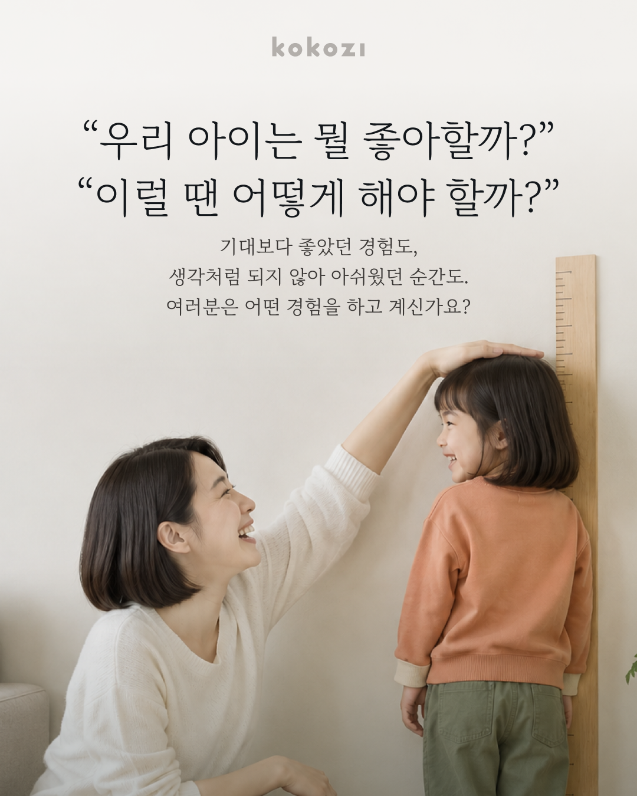
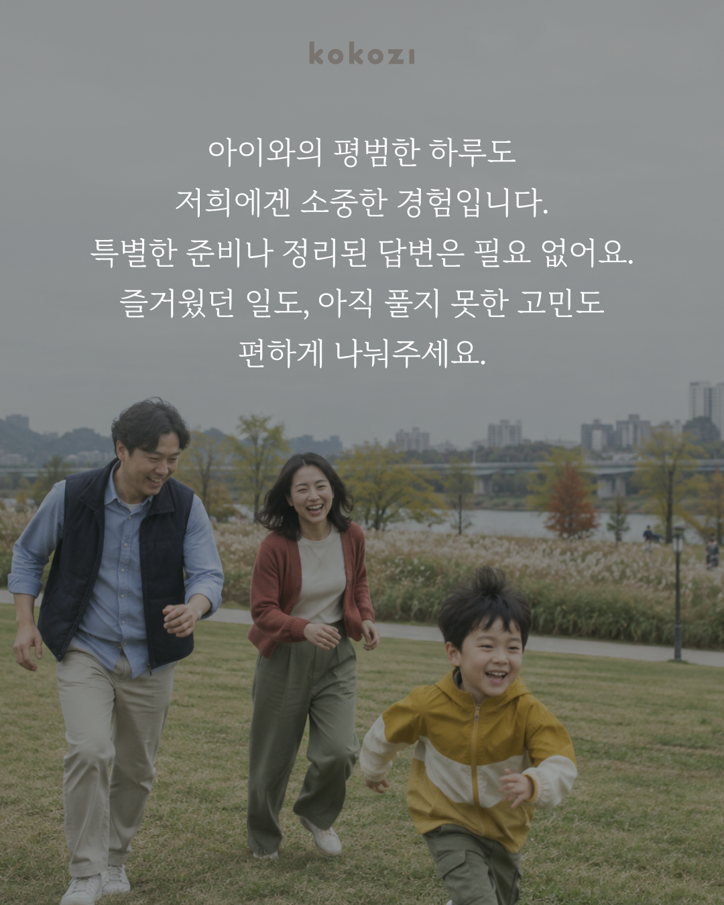
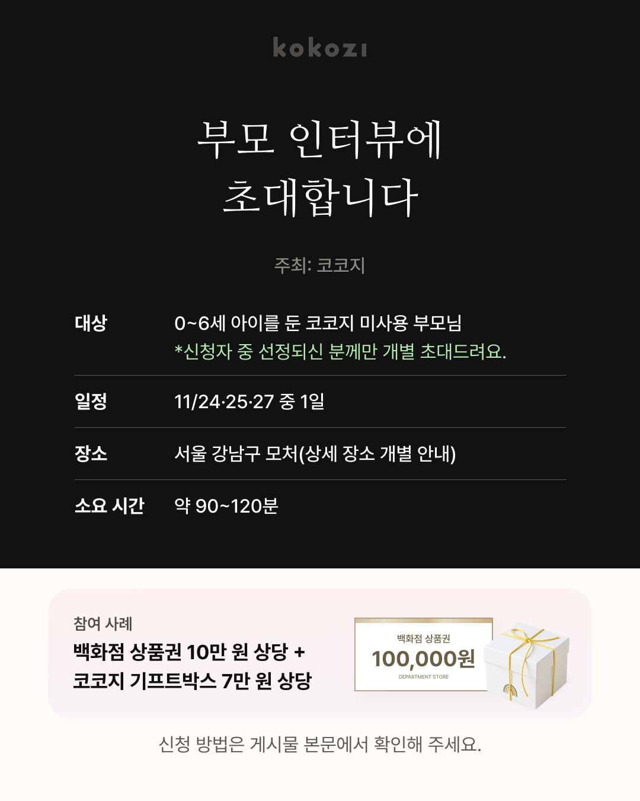

부모 인터뷰에 초대합니다.
육아하며 겪은 순간들을
들려주세요 💬✨
인터뷰에 참여하시면
17만 원 상당의 사례가 있대요! 🎁
아이를 키우며 생긴
기쁨도, 고민도, 물음표도.
함께 웃었던 순간부터 혼자 고민했던 순간까지,
엄마 아빠의 이야기를 듣고 싶어요.
“우리 아이는 뭘 좋아할까?”
“이럴 땐 어떻게 해야 할까?”
기대보다 좋았던 경험도,
생각처럼 되지 않아 아쉬웠던 순간도.
여러분은 어떤 경험을 하고 계신가요?
아이와의 평범한 하루도
저희에겐 소중한 경험입니다.
특별한 준비나 정리된 답변은 필요 없어요.
즐거웠던 일도, 아직 풀지 못한 고민도
편하게 나눠주세요.
인터뷰 신청 안내
- 대상
- 만 0~6세 자녀를 둔 코코지 미사용 부모님
- 일정
- 11월 24·25·27일 중 1일
- 장소
- 서울 강남구 모처
(상세 장소 개별 안내) - 시간
- 약 90~120분
- 사례
- 백화점 상품권 10만 원 상당
+ 코코지 기프트박스 7만 원 상당
신청 후, 초대 대상자를 선정하여 연락드립니다.
선정되신 분들께는 장소와 자세한 내용을 개별 안내드릴 예정입니다.